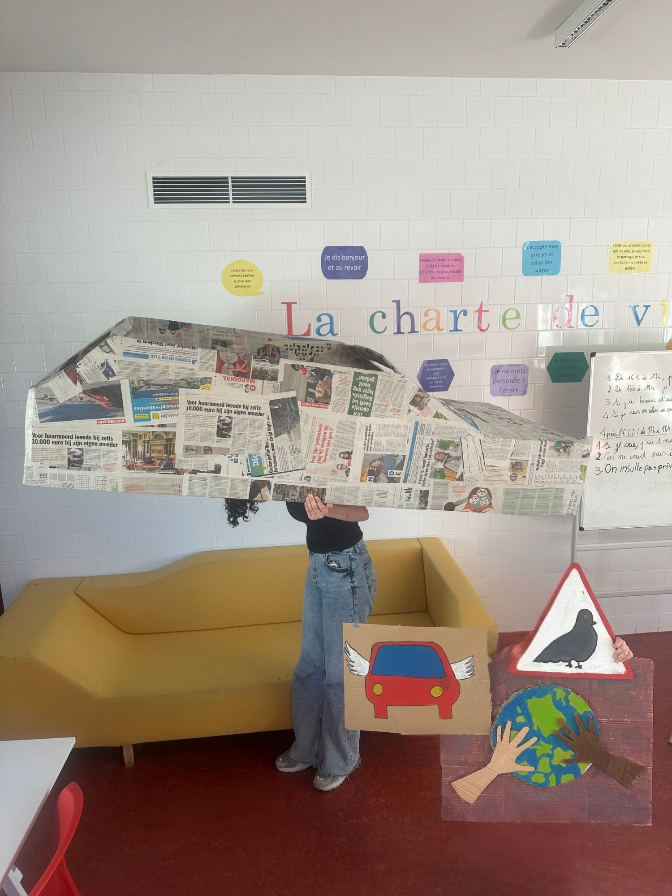
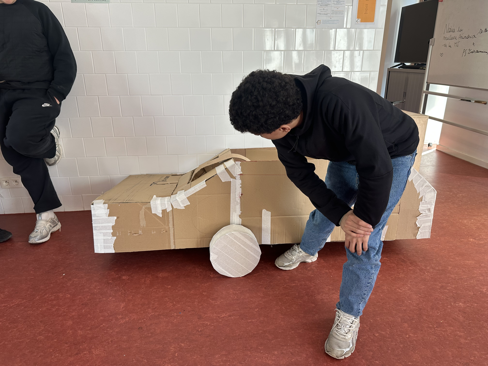

Over several months, I led a series of papier-mâché workshops with a group of teenagers aged 10 to 16. Starting from the question of how we imagine the future, the participants chose to explore the theme of transportation and collectively created a large-scale sculpture of a car from the future, which was later exhibited at the cultural centre Centre culturel Jacques Franck, Saint-Gilles Belgium. The making process became a space for exchange and discussion, touching on social and environmental justice, mobility and the kind of future we want to build. Through hands-on experimentation and collective creation, the workshops aimed to make artistic practice accessible to everyone while encouraging curiosity and critical thinking.

